<title>Opening Blueprint</title>
<meta name="claude:viewport-fit-sides" content="cover">
<link rel="stylesheet" href="https://fonts.googleapis.com/css2?family=Barlow+Condensed:wght@500;600&family=IBM+Plex+Sans:wght@400;600&family=IBM+Plex+Mono:wght@400;500&display=swap">
<style>
/* Layout: a surveyor's drawing set. One column of sheets, each plan at the same real scale, with the camera view beneath it. */
:root {
  --paper:#e7edf0; --sheet:#f5f8f9; --ink:#17262e; --muted:#51656f; --rule:#b8c7ce; --accent:#b4471f; --accent-ink:#fff;
  --void:#c5cfd3; --floor:#f2ece0; --sand:#ecd9a8; --grass:#c6dcae; --field:#d9d6a4; --dirt:#d8bd93; --water:#9cc9e4; --tree:#92b18f;
  --wall:#59666d; --face:#7d8a91; --struct:#8a7f9f; --furn:#a78a62; --danger:#e2846a; --vein:#c23bb5; --feed:#c9731d; --route:#17262e;
  --display:"Barlow Condensed","Arial Narrow",sans-serif; --body:"IBM Plex Sans","Segoe UI",sans-serif; --mono:"IBM Plex Mono",Consolas,monospace;
}
@media (prefers-color-scheme: dark) { :root:not([data-theme="light"]) {
  --paper:#101b21; --sheet:#17252c; --ink:#e4ecef; --muted:#9db0b9; --rule:#33474f; --accent:#f08a5c; --accent-ink:#1a0d07;
  --void:#0c151a; --floor:#3b3a35; --sand:#5c5238; --grass:#3b5236; --field:#524f33; --dirt:#57462f; --water:#2d5c78; --tree:#27402c;
  --wall:#90a0a8; --face:#62717a; --struct:#8878a8; --furn:#a2835a; --danger:#b5543c; --vein:#ec6ade; --feed:#e39a4d; --route:#e4ecef; color-scheme:dark } }
:root[data-theme="dark"] {
  --paper:#101b21; --sheet:#17252c; --ink:#e4ecef; --muted:#9db0b9; --rule:#33474f; --accent:#f08a5c; --accent-ink:#1a0d07;
  --void:#0c151a; --floor:#3b3a35; --sand:#5c5238; --grass:#3b5236; --field:#524f33; --dirt:#57462f; --water:#2d5c78; --tree:#27402c;
  --wall:#90a0a8; --face:#62717a; --struct:#8878a8; --furn:#a2835a; --danger:#b5543c; --vein:#ec6ade; --feed:#e39a4d; --route:#e4ecef; color-scheme:dark }
body { background:var(--paper); color:var(--ink); font:16px/1.5 var(--body); padding-left:max(16px,env(safe-area-inset-left,0px)); padding-right:max(16px,env(safe-area-inset-right,0px)); padding-block:32px 72px; }
main { max-width:940px; margin:0 auto; display:grid; gap:40px; }
main > * { min-width:0; }
h1,h2,h3 { font-family:var(--display); font-weight:600; margin:0; text-wrap:balance; letter-spacing:.01em; }
h1 { font-size:clamp(40px,8vw,60px); line-height:1; }
h2 { font-size:32px; line-height:1.1; }
h3 { font-size:22px; line-height:1.2; }
p { margin:0; max-width:68ch; }
.lede { font-size:19px; margin-top:12px; }
.muted,.cap { color:var(--muted); }
.cap { font-size:14px; }
section { display:grid; gap:16px; min-width:0; }
.sheet { background:var(--sheet); border:1px solid var(--rule); padding:20px; display:grid; gap:16px; min-width:0; }
.head { display:flex; flex-wrap:wrap; gap:4px 16px; align-items:baseline; justify-content:space-between; }
.dim { font:500 14px var(--mono); color:var(--muted); font-variant-numeric:tabular-nums; }
.scroll { overflow-x:auto; }
.plan { display:block; height:auto; touch-action:pan-y; cursor:crosshair; }
.ladder { display:block; width:100%; min-width:640px; height:auto; }
.below { display:grid; grid-template-columns:minmax(0,480px) minmax(0,1fr); gap:20px; align-items:start; }
@media (max-width:760px) { .below { grid-template-columns:minmax(0,1fr); } }
.below > * { min-width:0; }
.view { display:block; width:100%; height:auto; border:1px solid var(--rule); image-rendering:pixelated; }
.presets { display:flex; flex-wrap:wrap; gap:6px; margin-top:8px; }
button { font:14px var(--body); color:var(--ink); background:transparent; border:1px solid var(--rule); padding:4px 10px; cursor:pointer; }
button:hover { border-color:var(--accent); }
button[aria-pressed="true"] { background:var(--accent); border-color:var(--accent); color:var(--accent-ink); font-weight:600; }
button:focus-visible,textarea:focus-visible,input:focus-visible { outline:2px solid var(--accent); outline-offset:2px; }
.marks { display:flex; flex-wrap:wrap; gap:6px; }
textarea { font:15px/1.4 var(--body); color:var(--ink); background:var(--paper); border:1px solid var(--rule); padding:8px; width:100%; box-sizing:border-box; resize:vertical; min-height:58px; }
table { border-collapse:collapse; width:100%; font-size:15px; }
th,td { text-align:left; padding:6px 10px 6px 0; border-bottom:1px solid var(--rule); vertical-align:top; }
th { font-weight:600; color:var(--muted); font-size:14px; }
td.n,th.n { text-align:right; font-family:var(--mono); font-variant-numeric:tabular-nums; white-space:nowrap; }
ul.tight { margin:0; padding-left:18px; display:grid; gap:4px; }
.legend { display:flex; flex-wrap:wrap; gap:4px 14px; font-size:14px; color:var(--muted); }
.legend i { display:inline-block; width:14px; height:14px; margin-right:5px; vertical-align:-2px; border:1px solid var(--rule); }
.job { border-top:1px solid var(--rule); padding-top:14px; display:grid; gap:8px; }
.job ol { margin:0; padding-left:24px; columns:2; column-gap:24px; font-size:14.5px; }
@media (max-width:640px) { .job ol { columns:1; } }
.quote { font:14px/1.45 var(--mono); background:var(--paper); padding:8px 10px; overflow-wrap:anywhere; }
.total { font:600 26px var(--display); }
.q { border-top:1px solid var(--rule); padding-top:14px; display:grid; gap:8px; }
.saved { position:sticky; top:env(safe-area-inset-top,0px); font-size:14px; background:var(--paper); padding:6px 0; color:var(--muted); z-index:5; }
.saved.bad { color:var(--accent); }
.saved::before { content:""; }
.t { font:500 11px var(--mono); fill:var(--ink); paint-order:stroke; stroke:var(--sheet); stroke-width:3px; stroke-linejoin:round; pointer-events:none; }
.tv { font:500 9px var(--mono); }
@media (prefers-reduced-motion: no-preference) { .frame { transition:none; } }
</style>

<main>
<header>
<h1>Opening Blueprint</h1>
<p class="lede">Five maps for the opening, drawn to true scale before anything is built. Click any plan to see what the camera would show from that spot.</p>
<p class="cap" style="margin-top:10px">A proposal for you to mark up. Beats and sizes come from <code>docs/campaign/01-opening/brief.md</code>. The maps aren't built yet, and all names are working labels.</p>
</header>

<div class="saved" id="save">Connecting…</div>

<section>
<h2>Why our rooms feel tiny</h2>
<p>One screen shows about 30 by 21 units, measured along the screen, and rooms appear as diamonds. Every room we have except Survive is 24 by 16, so you always see nearly all of it at once. A place only feels like a place when you can't.</p>
<div class="sheet">
<div class="scroll"><svg id="ladder" class="ladder" role="img" aria-label="Sizes compared at one scale: one screen, today's rooms, Survive and the five proposed maps"></svg></div>
<p class="cap">All at one scale. The dot inside One screen is a wizard. Heights are the map's north-to-south size.</p>
</div>
<div class="sheet">
<h3>The sizing rules I used</h3>
<ul class="tight">
<li><strong>Every map is bigger than a screen,</strong> at least 1.5 screens in the direction you travel.</li>
<li><strong>You walk up the screen.</strong> The view reaches 14 units ahead and 8 behind, because the rune bar covers the bottom. North on these plans is up and to the right on the screen.</li>
<li><strong>You see enemies coming</strong> (pillar 7). A fight needs at least 15 units of visible approach.</li>
<li><strong>Four wizards fit.</strong> A Fire ring is 3 units in radius, so a fight wants about 6 units per player, and a room at least 24 by 18.</li>
<li><strong>Walks are short but real.</strong> You cross a screen in 7 seconds at 4.2 units a second. Stretches between beats stay at 5 to 15 seconds.</li>
</ul>
</div>
<div class="sheet"><div class="scroll"><table id="route"></table></div></div>
<div class="legend" id="legend"></div>
</section>

<div id="maps" style="display:grid;gap:40px;min-width:0"></div>

<section id="lighting">
<h2>Lighting</h2>
<p>The same scene under each mood, in the isometric view. Moods are one line of settings each, so tell me what's off and I'll change it.</p>
<div class="sheet">
<figure style="margin:0;display:grid;gap:6px">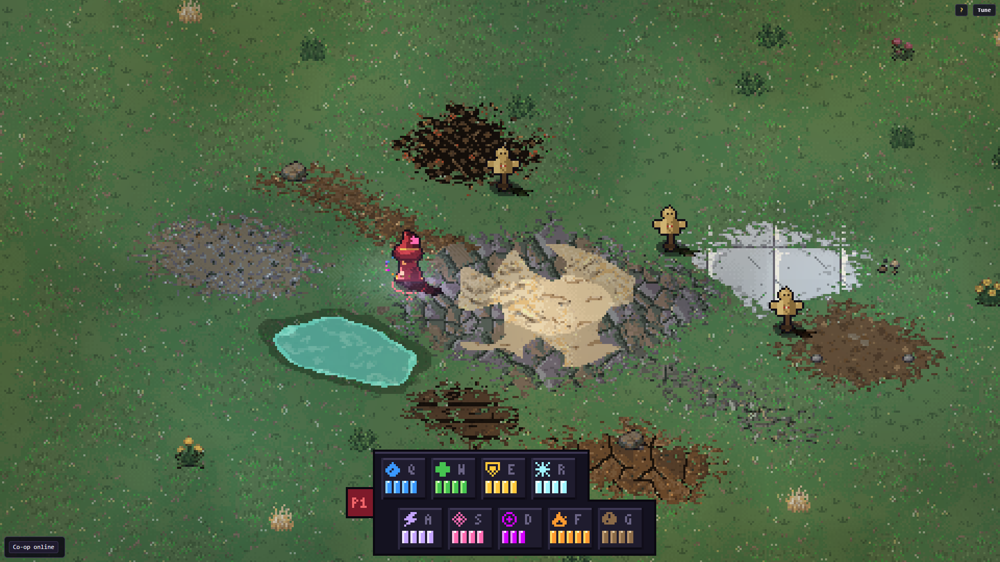<figcaption class="cap">Day</figcaption></figure>
<figure style="margin:0;display:grid;gap:6px">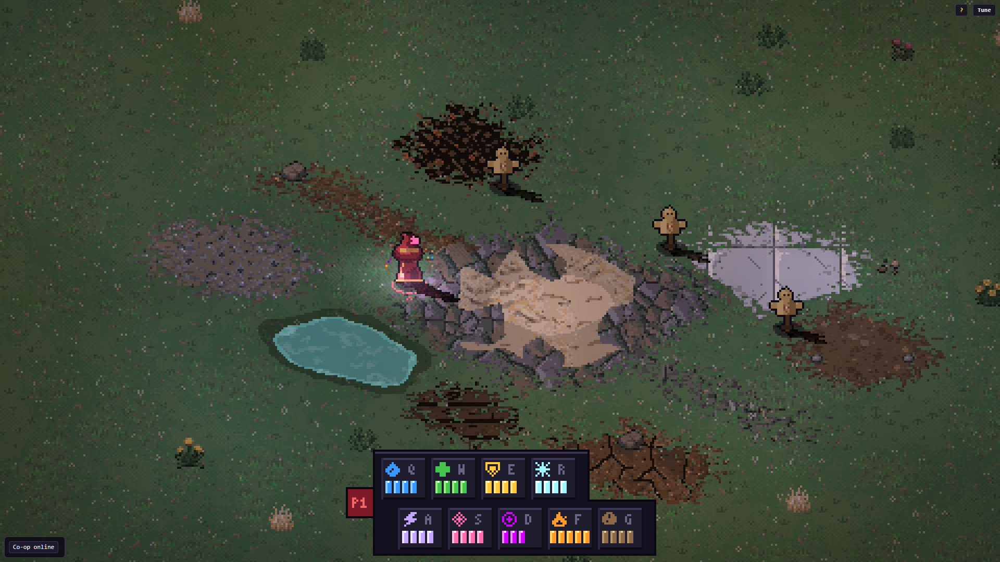<figcaption class="cap">Dusk</figcaption></figure>
<figure style="margin:0;display:grid;gap:6px">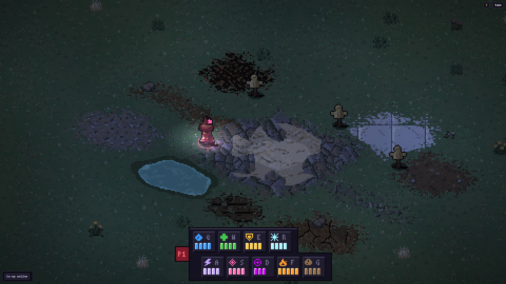<figcaption class="cap">Night</figcaption></figure>
<figure style="margin:0;display:grid;gap:6px">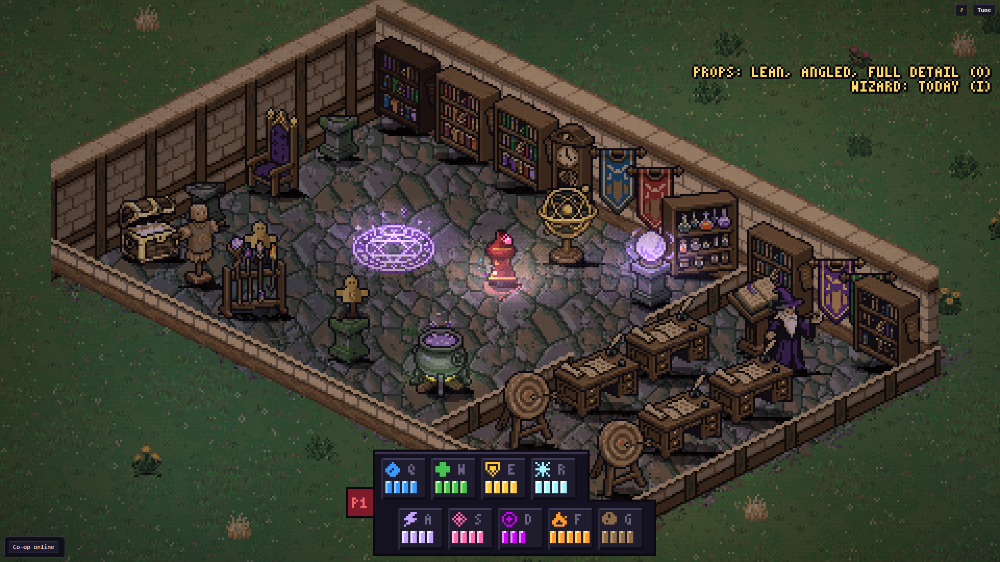<figcaption class="cap">Indoors, the Academy's own mood</figcaption></figure>
<figure style="margin:0;display:grid;gap:6px">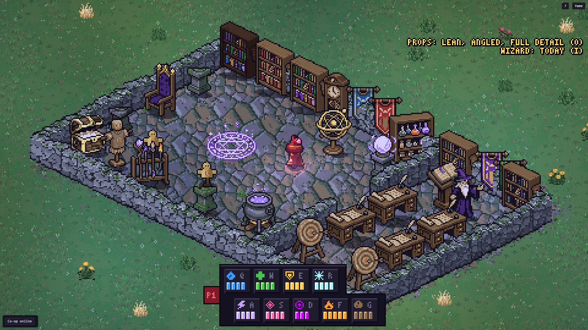<figcaption class="cap">The same room with the lighting off</figcaption></figure>
<figure style="margin:0;display:grid;gap:6px">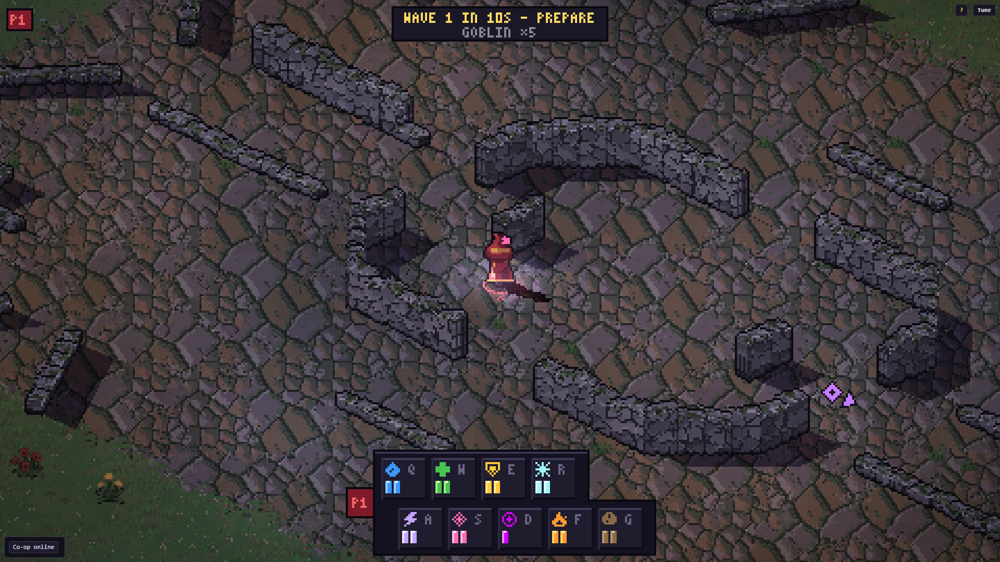<figcaption class="cap">Survive at dusk, with walls casting shadows</figcaption></figure>
<figure style="margin:0;display:grid;gap:6px">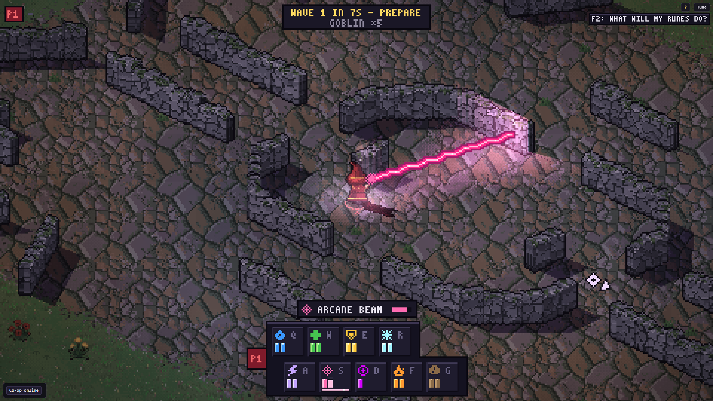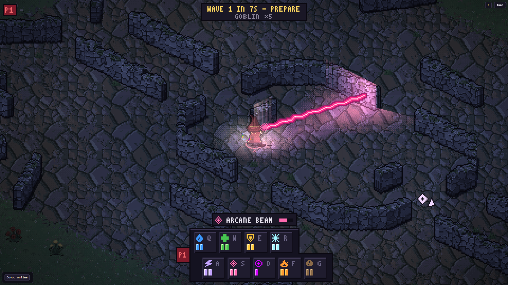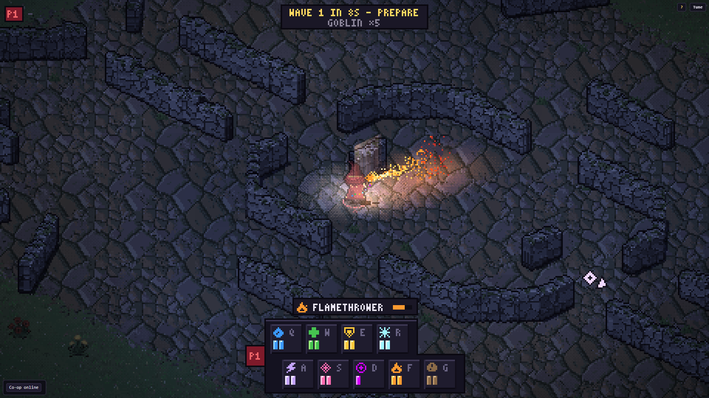<figcaption class="cap">Spells now cast coloured light along their whole length. Walls stop light, and the wall faces turned toward a light catch it.</figcaption></figure>
<label class="cap" for="note-ratings-lighting-look">Is it calmer now? Are the shadows too strong? Any mood you'd change?</label><textarea id="note-ratings-lighting-look" data-c="ratings" data-i="lighting-look"></textarea>
</div>
</section>

<section id="assets">
<h2>The assets it needs</h2>
<p>Everything each map calls for, sorted by where it comes from. You asked me to go ahead with the general art, so most of it is bought. <strong>The one thing left, the defence itself, waits for you to mark it Approve,</strong> because it's specific to this segment.</p>
<div class="sheet">
<h3>Bought so far: 158 generations</h3>
<p class="cap">Mark anything you'd redo below. Everything is kept, and 1,772 generations remain until 7 December.</p>
<figure style="margin:0;display:grid;gap:6px">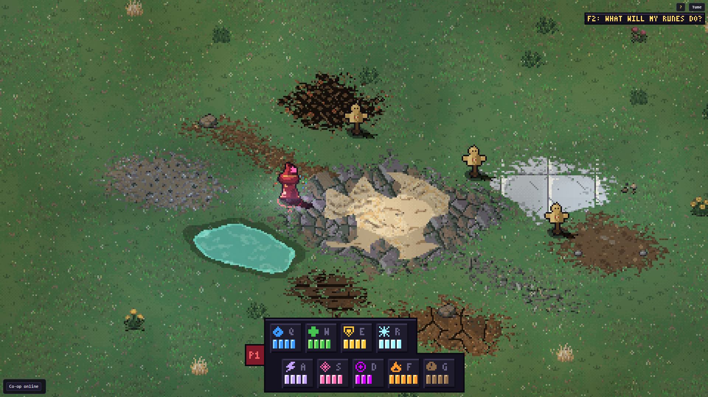<figcaption class="cap">The ground painter under the isometric camera, using a throwaway layout to show every material. Each material meets its neighbours in its own way: grass frays, loose ground clumps, paving loses whole stones, water gets a bank and foam. Variation comes from alternate tiles, broad warm and cool drift, and scattered small objects. The grass has been quieted since your note, and this one has the day lighting on.</figcaption></figure>
<figure style="margin:0;display:grid;gap:6px">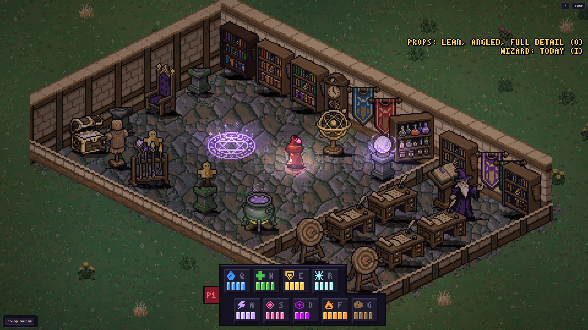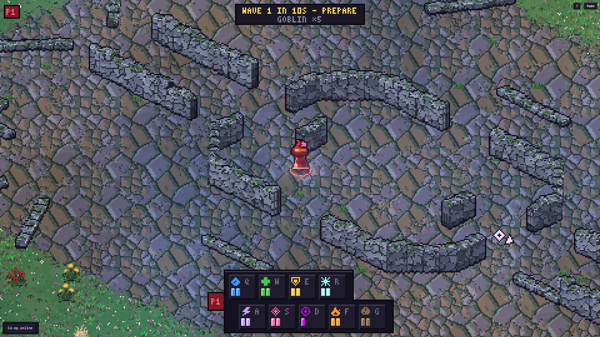<figcaption class="cap">The isometric camera in two existing rooms.</figcaption></figure>
<label class="cap" for="note-ratings-ground-look">Notes on the ground</label><textarea id="note-ratings-ground-look" data-c="ratings" data-i="ground-look"></textarea>
<figure style="margin:0;display:grid;gap:6px">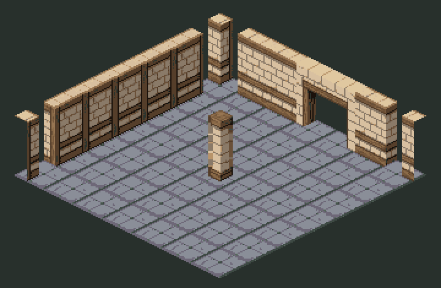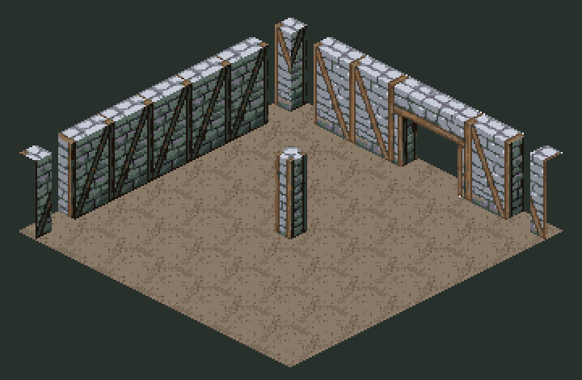<figcaption class="cap">Both wall kits, stamped into test rooms. They include doorways, pillars, stairs and corners. The floors show a diamond grid, so the painter does the floors. The school kit is now the Academy's walls; the fortification kit waits for the battery.</figcaption></figure>
<label class="cap" for="note-ratings-kits-look">Notes on the walls</label><textarea id="note-ratings-kits-look" data-c="ratings" data-i="kits-look"></textarea>
<figure style="margin:0;display:grid;gap:6px">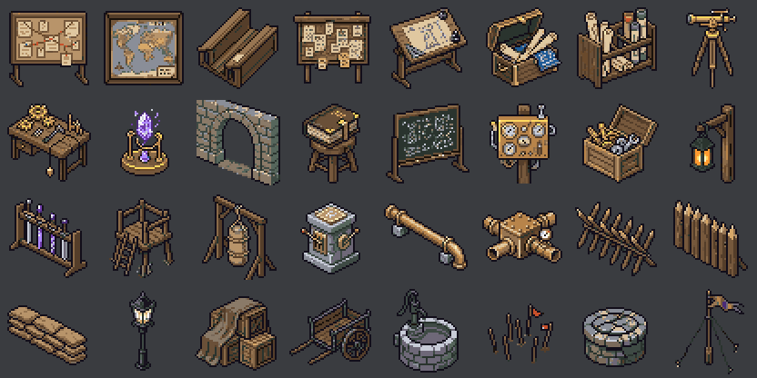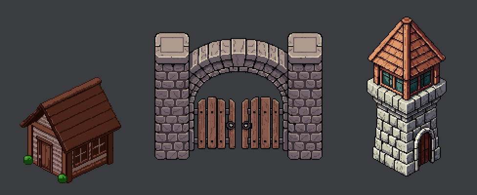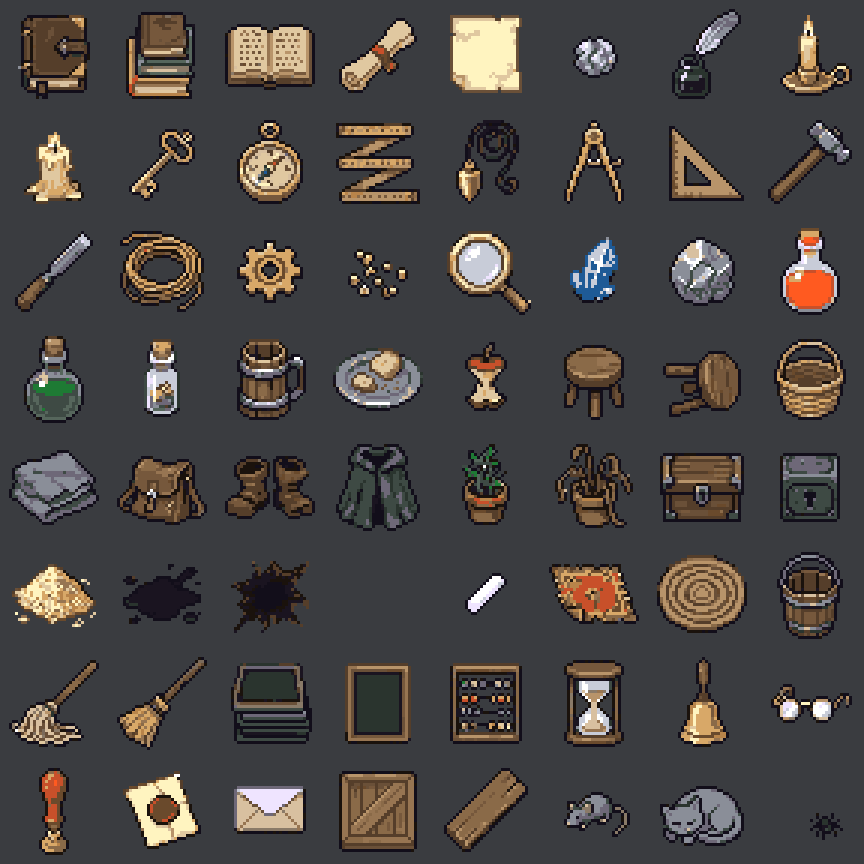<figcaption class="cap">Furnishings, field works, three buildings and 64 pieces of indoor clutter, an addition you hadn't seen listed. The gatehouse came out straight-on, unlike the others.</figcaption></figure>
<label class="cap" for="note-ratings-props-look">Notes on the props</label><textarea id="note-ratings-props-look" data-c="ratings" data-i="props-look"></textarea>
</div>
<div class="sheet">
<div class="head"><h3>The original list</h3><span class="total" id="total"></span></div>
<p class="cap">Each kit cost 10 generations rather than the 15 quoted. Every result is kept, and variants are made locally where possible.</p>
<div id="jobs" style="display:grid;gap:16px"></div>
</div>
<div class="sheet"><h3>Already owned, or free</h3><div class="scroll"><table id="owned"></table></div></div>
</section>

<section>
<h2>Two questions</h2>
<div class="sheet" id="questions"></div>
<div class="sheet"><h3>Anything else</h3><label class="cap" for="note-answers-general">Notes on the whole plan</label><textarea id="note-answers-general" data-c="answers" data-i="general"></textarea></div>
</section>
</main>

<script>
const R=(x,y,w,h,k,l,o)=>({t:'r',x,y,w,h,k,l,...o}), C=(x,y,r,k,l)=>({t:'c',x,y,r,k,l}), L=(p,k)=>({t:'l',p,k});
const VW=30, UP=13.6, DOWN=7.6, SPEED=4.2;
const MAPS=[
{id:'hall',n:1,name:'Lecture hall and cloister',W:50,H:34,base:'void',beats:'1',min:'1–2',
 what:'The briefing. You can walk about while it runs, then leave along the cloister past the postings.',
 route:[[20,24],[38,25],[45,25],[45,0]],
 views:[['In the aisle',20,22],['At the dais',20,12],['In the cloister',45,14]],
 zones:[['Hall','38 × 28','Room to wander during the talk. Its far ends are off screen from the aisle.'],['Dais and report board','20 × 5','The briefing and the wall of strange reports.'],['Benches','two blocks','An 8-unit aisle, so four wizards can stand in it.'],['Cloister','6 × 32','A 6-second walk past the postings, out to the yard.']],
 s:[R(2,2,38,28,'floor','Hall',{ly:26}),R(42,0,6,32,'floor'),R(40,23,2,5,'floor'),R(11,2,20,1,'struct'),R(12,3,18,4,'sand','Dais'),
  R(5,10,12,1.2,'furn'),R(5,13,12,1.2,'furn'),R(5,16,12,1.2,'furn'),R(25,10,12,1.2,'furn'),R(25,13,12,1.2,'furn'),R(25,16,12,1.2,'furn'),R(47,8,1,10,'struct'),{t:'x',x:45,y:30,l:'Cloister'},{t:'x',x:44.2,y:13,l:'Postings',a:'end'}]},
{id:'yard',n:2,name:'Drill yard',W:56,H:42,base:'grass',beats:'2, 3',min:'4',
 what:'The crash course, walked as a loop. It ends at the rack that hands you a charged focus, then the north gate.',
 route:[[8,42],[8,35],[24,34],[39,34],[47,27],[46,20],[30,21],[12,16],[12,10],[30,9],[30,0]],
 views:[['Strike lanes',24,33],['Parry lane',30,21],['Hands test',12,11]],
 zones:[['Strike lanes','12 × 11','Four lanes, one per seat.'],['Heavy, and Retreat','10 × 8, 11 × 10','A sack to shove, then a slam to hop away from.'],['Parry lane','22 × 6','A shooter at one end, you at the other.'],['Hands test','18 × 14','The first small fight.'],['Focus rack','by the gate','Your first blade, from stored charge.']],
 s:[R(0,40,5,2,'wall'),R(11,40,45,2,'wall'),R(0,0,27,2,'wall'),R(33,0,23,2,'wall'),R(0,2,2,38,'wall'),R(54,2,2,38,'wall'),
  R(4,31,10,8,'sand','Form up'),R(18,28,12,11,'sand','Strike lanes'),C(20,29.5,.6,'furn'),C(23,29.5,.6,'furn'),C(26,29.5,.6,'furn'),C(29,29.5,.6,'furn'),
  R(34,30,10,8,'sand','Heavy'),R(42,16,11,10,'sand','Retreat'),C(47.5,20,2.1,'danger'),R(20,18,22,5.6,'sand','Parry lane'),R(20,19.6,1.6,2.4,'struct'),R(3,3,18,14,'sand','Hands test'),R(26,6,8,5,'sand'),R(28,7,4,1.5,'struct'),{t:'x',x:30,y:13,l:'Focus rack'}]},
{id:'battery',n:3,name:'The battery',W:72,H:64,base:'grass',beats:'4, 5, 6, 7',min:'6',
 what:'The first job, and the moment. You drive a defence on the wall until it runs dry, then go out through the gate on your own power.',
 route:[[36,64],[36,48],[31,39],[36,38],[36,24],[58,9],[58,0]],
 views:[['Driving a defence',31,24],['Your own body',31,38],['Out the gate',36,22]],
 zones:[['Wall and four defences','60 long','One defence per seat. All four fit one screen, for local co-op.'],['Killing ground','60 × 26','Two screens wide. Enemies are in view for 15 to 25 units.'],['Small well and feed lines','centre','The feed lines glow, then go out.'],['Rear yard','56 × 15','Where your body stands, 6 to 8 units from the gate it breaks through.'],['Exit, north-east','','Follows the mark of where the vein went.']],
 s:[R(0,0,4,64,'tree'),R(68,0,4,64,'tree'),R(4,0,9,5,'tree'),R(19,0,14,5,'tree'),R(39,0,16,5,'tree'),R(61,0,7,5,'tree'),
  R(6,6,60,26,'field','Killing ground',{ly:13}),R(8,37,56,15,'dirt','Rear yard',{ly:49}),R(33,52,6,12,'dirt'),
  R(4,32,29,3,'wall'),R(39,32,29,3,'wall'),
  R(22,29.5,4,5.5,'struct'),R(29,29.5,4,5.5,'struct'),R(39,29.5,4,5.5,'struct'),R(46,29.5,4,5.5,'struct'),
  {t:'x',x:36,y:27.6,l:'Gate'},
  L([[36,45],[24,38]],'feed'),L([[36,45],[31,38]],'feed'),L([[36,45],[41,38]],'feed'),L([[36,45],[48,38]],'feed'),
  C(24,38,.7,'furn'),C(31,38,.7,'furn'),C(41,38,.7,'furn'),C(48,38,.7,'furn'),C(36,45,2.4,'struct','Well'),
  R(52,40,10,9,'struct','Stores'),C(14,44,2.5,'water','Cistern'),
  R(12,22,8,.7,'furn'),R(50,20,9,.7,'furn'),R(28,16,7,.7,'furn'),C(20,14,1.5,'wall'),C(47,11,1.4,'wall'),
  C(16,3,1.6,'danger'),C(36,3,1.6,'danger'),C(58,3,1.6,'danger'),L([[64,0],[57,13],[65,28],[70,32]],'vein'),{t:'x',x:51,y:27.6,l:'Vein now',a:'start'}]},
{id:'trail',n:4,name:'The vein trail',W:86,H:40,base:'tree',beats:'8, 9, 10',min:'6',
 what:'Following where the vein went. A shorter second element, the surge that wakes the rest, then a quiet camp.',
 route:[[0,33],[14,30],[26,28],[38,23],[50,22],[62,26],[70,29],[77,31],[86,29]],
 views:[['Storehouse',18,28],['The surge',56,20],['Camp',77,30]],
 zones:[['Storehouse yard','30 × 24','A fire Fire can\'t help with, and a pump.'],['Riven ground','28 × 26','The exposed vein. Room for everyone to try anything at once.'],['Camp','14 × 14','Quiet. The first meditation.']],
 s:[R(0,30,4,6,'dirt'),R(4,14,30,24,'grass','Storehouse yard',{ly:36}),R(10,18,10,8,'struct','Shed'),C(26,32,2,'water','Pump'),R(34,20,10,6,'dirt'),R(42,6,28,26,'field','Riven ground',{ly:30}),L([[45,28],[52,18],[60,16],[66,9]],'vein'),R(66,26,8,6,'dirt'),R(70,22,14,14,'grass','Camp',{ly:24.5}),C(77,29,1,'struct'),R(84,26,2,6,'dirt')]},
{id:'way',n:5,name:'The way through, and the holding ground',W:76,H:62,base:'tree',beats:'11, 12',min:'13',
 what:'Three small problems in a row, using the existing rune beats, then a full fight at the place the new defence will go.',
 route:[[0,53],[14,52],[26,53],[39,52],[52,53],[59,52],[59,40],[38,26],[38,0]],
 views:[['The ford',39,52],['Holding ground',38,24],['Its north edge',38,12]],
 zones:[['Three pockets','18–22 × 16 each','Thicket, ford, blocked pass. Each one problem that a rune solves.'],['Holding ground','48 × 34','The size of Survive, and one and a half screens each way.'],['New vein site','centre','"Where the river now goes." Your report, and the next posting.']],
 s:[R(0,50,4,6,'dirt'),R(4,44,20,16,'grass','Thicket',{ly:58}),R(14,46,3,12,'danger'),R(24,50,4,6,'dirt'),R(28,44,22,16,'grass'),R(36,44,6,16,'water','Ford'),R(50,50,4,6,'dirt'),R(54,44,18,16,'grass','Pass',{ly:58,lx:68}),R(60,44,2,6,'wall'),R(14,4,48,34,'field','Holding ground',{ly:9}),R(56,38,6,6,'dirt'),R(35,0,6,4,'dirt'),C(38,20,3,'vein','Site'),C(18,8,1.4,'danger'),C(58,8,1.4,'danger'),C(18,34,1.4,'danger'),C(50,34,1.4,'danger')]},
];
const OWNED=[
['Hall','lectern, desk, bench, bookshelf (6 kinds), banner (5), teacher, clock, armillary, crystal ball, plinth','Wizard rig recoloured for the other students: free'],
['Yard','training dummy (3), target (2), pell, scarecrow, sword rack, weapon rack (2), fence (6), low stone wall, hay bale, rope, practice sword','Sack, marks on the sand: local variants, free'],
['Battery','crates, barrel, handcart, water trough, well, tent, signpost, rocks, trees (4)','Drained defence: local edit of the bought one, free. Feed-line glow, drying pool, infusion: code-drawn'],
['Trail','oak, pine, bushes, boulders, log, campfire ring, tent, flat stone, about 60 small ground details','Fire on the shed, vein light: code-drawn'],
['Way','brambles (in the game), standing stone, broken pillar, ruined arch, footbridge, rocks','Water surface and enemies: in the game, recoloured as needed'],
];
const STYLE='hi-bit pixel art, dark outline, seen from above at an isometric angle';
const JOBS=[
{id:'job-defence',name:'The defence, the segment\'s main object',tool:'create_1_direction_object, 128 px, 4 candidates to pick from; then create_object_state for the broken version',cost:20,
 why:'The thing you spend three minutes inside, and watch die. Large enough to read as a building next to a wizard.',
 lines:['A fixed fire defence on a squat stone tower: a heavy brass nozzle on a swivel mount, fed by brass pipes, with a glowing orange crystal in a cage at its base, medieval fantasy engineering, '+STYLE,'Broken state: the same defence burnt out, the crystal cracked and dark, the nozzle drooping, soot on the stone']},
{id:'job-academy',bought:true,name:'Academy sheet',tool:'create_1_direction_object, 48 px, our palette',cost:10,
 why:'What makes it an engineering school and not a generic wizard hall.',
 lines:['furnishing for a medieval fantasy guild school of magical engineers, '+STYLE],
 items:['large wooden presentation board on legs, pinned with parchment reports and red string','painted map of a continent in a wooden frame','long tiered wooden lecture bench running diagonally from upper left to lower right','wooden notice board crowded with paper postings','drafting table with a half-drawn plan of a tower','open wooden trunk half packed with rolled plans','rack of rolled parchment charts','brass surveying instrument on a wooden tripod','workbench with brass tools and a plumb line','small brass test rig holding a glowing crystal','stone cloister arch running diagonally from upper left to lower right','stack of heavy ledgers on a stool','chalkboard on a stand covered in diagrams','brass instrument panel with dials on a wooden post','wooden crate of brass fittings','iron lantern hanging from a post']},
{id:'job-works',bought:true,name:'Field works sheet',tool:'create_1_direction_object, 48 px, our palette',cost:10,
 why:'The battery and the yard\'s special pieces. The stakes and palisade are cover in the killing ground.',
 lines:['field fortification and works prop for a medieval fantasy magical defence line, '+STYLE],
 items:['wooden rack holding short sword hilts set with glowing etched crystals','small wooden archer\'s platform','heavy canvas training sack hanging from a wooden frame','waist-high stone pedestal with brass levers and a glowing rune plate','brass pipe section on stone supports, running diagonally from upper left to lower right','brass pipe junction box','row of sharpened wooden stakes running diagonally from upper left to lower right','timber palisade section running diagonally from upper left to lower right','sandbag barricade','iron post with a glass ward lamp','stack of supply crates under canvas','two-wheeled supply cart','hand pump over a stone cistern','surveyor\'s stakes with red flags','cracked stone well cap, dry','signal mast with a pennant']},
{id:'job-buildings',bought:true,name:'Three buildings',tool:'create_map_object, high top-down',cost:3,
 why:'Too large for a sheet\'s 48 pixels, and cheap at one generation each. We recolour them to our palette locally, as we did with the oak.',
 lines:['Small timber storehouse with a shingled roof, '+STYLE+' (128 × 128 px)','Heavy timber double gate in a stone gatehouse arch, '+STYLE+' (192 × 192 px)','Small stone guard tower with a timber roof, '+STYLE+' (128 × 192 px)']},
{id:'job-kit-academy',bought:true,name:'Academy building kit',tool:'create_building_kit, isometric, 48 px, walls 2 tiles high, grid layout',cost:10,
 why:'Walls, floors, doorways, pillars and stairs that join up. We haven\'t tried this tool, so I\'d buy this one and look at it before the second kit.',
 lines:['Walls: pale dressed stone block walls with oak trim, a medieval guild school','Floor: worn grey flagstone floor']},
{id:'job-kit-wall',bought:true,name:'Fortification building kit',tool:'create_building_kit, isometric, 48 px, walls 2 tiles high, grid layout',cost:10,
 why:'The long defensive wall and the yard\'s boundary. Bought only if the first kit looks right.',
 lines:['Walls: rough grey fieldstone fortification wall with timber bracing','Floor: packed earth and gravel']},
];
const QS=[
{id:'q-2-reach',title:'Can a defence reach further than you can?',body:'Plain Fire sprays only 4.5 units, which is short for a tower. Doubling it for the defence means enemies are hit well before the wall, and losing it hurts more.',rec:'double',choices:[['double','Yes, twice a person\'s reach (my pick)'],['same','No, the same as a person']]},
{id:'q-3-order',title:'What gets built first?',body:'The battery holds the moment we most need to test.',rec:'battery',choices:[['battery','The battery first, as a plain playable room (my pick)'],['story','In story order, from the hall']]},
];
const ZNS='http://www.w3.org/2000/svg', KC=k=>`var(--${k})`;
const S=(tag,a,t)=>{const e=document.createElementNS(ZNS,tag);for(const k in a)e.setAttribute(k,a[k]);if(t!=null)e.textContent=t;return e;};
const el=(tag,cls,text)=>{const e=document.createElement(tag);if(cls)e.className=cls;if(text!=null)e.textContent=text;return e;};
const $=id=>document.getElementById(id);
const pathLen=p=>p.slice(1).reduce((a,q,i)=>a+Math.hypot(q[0]-p[i][0],q[1]-p[i][1]),0);

function ladder(){
 const items=[['One screen',VW,21,1],['Most rooms',24,16,1],['Survive',48,34,0],...MAPS.map(m=>[m.n+' '+m.name.split(',')[0].replace(/^The /,''),m.W,m.H,2])];
 const gap=7,H=64,W=items.reduce((a,i)=>a+i[1]+gap,gap),svg=$('ladder');
 svg.setAttribute('viewBox',`0 0 ${W} ${H+17}`);
 let x=gap;
 for(const [n,w,h,kind] of items){
  svg.append(S('rect',{x,y:H+2-h,width:w,height:h,fill:kind===2?KC('sand'):kind===1?KC('danger'):KC('void'),stroke:KC('ink'),'stroke-width':.3}));
  const words=n.length>12?n.split(' '):[n];
  svg.append(S('text',{x,y:H+6,'font-family':'var(--mono)','font-size':3,fill:KC('ink')},words[0]+(words[1]&&words[0].length<3?' '+words[1]:'')));
  if(words[1]&&words[0].length>=3)svg.append(S('text',{x,y:H+9.3,'font-family':'var(--mono)','font-size':3,fill:KC('ink')},words.slice(1).join(' ')));
  svg.append(S('text',{x,y:H+13.5,'font-family':'var(--mono)','font-size':2.8,fill:KC('muted')},w+'×'+h));
  if(n==='One screen')svg.append(S('circle',{cx:x+w/2,cy:H+2-h/2,r:.45,fill:KC('ink')}));
  x+=w+gap;
 }
}

function draw(svg,m,mode,cam){
 svg.replaceChildren();
 const plan=mode==='plan',RT=Math.SQRT1_2,cu=(cam[0]-cam[1])*RT,cv=(cam[0]+cam[1])*RT;
 const P=(x,y)=>plan?[x*10,y*10]:[240+((x-y)*RT-cu)*16,135+((x+y)*RT-cv)*8];
 const W=plan?m.W*10:480,H=plan?m.H*10:270,cls=plan?'t':'t tv';
 const pts=(a,up=0)=>a.map(([x,y])=>{const q=P(x,y);return q[0]+','+(q[1]-up);}).join(' ');
 const corners=(x,y,w,h)=>[[x,y],[x+w,y],[x+w,y+h],[x,y+h]];
 svg.append(S('rect',{x:0,y:0,width:W,height:H,fill:KC('void')}));
 svg.append(S('polygon',{points:pts(corners(0,0,m.W,m.H)),fill:KC(m.base)}));
 const labels=[];
 for(const s of m.s){
  if(s.t==='r'){
   const c=corners(s.x,s.y,s.w,s.h);
   if(!plan&&(s.k==='wall'||s.k==='struct')){svg.append(S('polygon',{points:pts(c),fill:KC('face')}));svg.append(S('polygon',{points:pts(c,16),fill:KC(s.k)}));}
   else svg.append(S('polygon',{points:pts(c),fill:KC(s.k)}));
   if(s.l)labels.push([s.lx!=null?s.lx:s.x+s.w/2,s.ly!=null?s.ly:s.y+s.h/2,s.l,'middle']);
  }else if(s.t==='c'){
   const q=P(s.x,s.y);
   svg.append(S('ellipse',{cx:q[0],cy:q[1],rx:s.r*(plan?10:16),ry:s.r*(plan?10:8),fill:s.k==='vein'?'none':KC(s.k),stroke:s.k==='vein'?KC('vein'):'none','stroke-width':3}));
   if(s.l)labels.push([s.x,s.y,s.l,'middle']);
  }else if(s.t==='l'){
   svg.append(S('polyline',{points:pts(s.p),fill:'none',stroke:KC(s.k),'stroke-width':s.k==='vein'?3.5:2,'stroke-dasharray':s.k==='feed'?'5 4':''}));
  }else if(s.t==='x')labels.push([s.x,s.y,s.l,s.a||'middle']);
 }
 if(plan)svg.append(S('polyline',{points:pts(m.route),fill:'none',stroke:KC('route'),'stroke-width':1.6,'stroke-dasharray':'2 5','stroke-linecap':'round'}));
 for(const [x,y,t,a] of labels){const q=P(x,y);svg.append(S('text',{x:q[0],y:q[1]+4,'text-anchor':a,class:cls},t));}
 if(plan){
  svg.append(S('rect',{x:2,y:H-12,width:100,height:3,fill:KC('ink')}));
  svg.append(S('text',{x:106,y:H-6,class:'t'},'10 units'));
  // one screen, laid on the plan: a turned rectangle, since the camera looks along the diagonal
  const box=[[cu-VW/2,cv-UP],[cu+VW/2,cv-UP],[cu+VW/2,cv+DOWN],[cu-VW/2,cv+DOWN]].map(([u,v])=>[(u+v)*RT,(v-u)*RT]);
  svg.append(S('polygon',{class:'frame',points:pts(box),fill:'none',stroke:KC('accent'),'stroke-width':2.5}));
  const c=P(cam[0],cam[1]);svg.append(S('circle',{cx:c[0],cy:c[1],r:5,fill:KC('accent')}));
 }else{
  for(const [r,t] of [[4.5,'Fire spray 4.5'],[9,'Place 9'],[12,'Beam 12']]){
   svg.append(S('ellipse',{cx:240,cy:135,rx:r*16,ry:r*8,fill:'none',stroke:KC('accent'),'stroke-width':1,'stroke-dasharray':'3 3',opacity:.8}));
   svg.append(S('text',{x:240,y:135-r*8+3,'text-anchor':'middle',class:cls},t));
  }
  svg.append(S('ellipse',{cx:240,cy:135,rx:7.2,ry:3.6,fill:KC('ink'),opacity:.35}));
  svg.append(S('rect',{x:233,y:113,width:14,height:22,rx:6,fill:KC('accent')}));
  svg.append(S('rect',{x:0,y:0,width:480,height:26,fill:KC('void'),opacity:.75}));
  svg.append(S('rect',{x:0,y:196,width:480,height:74,fill:KC('void')}));
  svg.append(S('text',{x:240,y:236,'text-anchor':'middle',class:cls},'rune bar'));
 }
}

function buildMaps(){
 const host=$('maps');
 for(const m of MAPS){
  const sec=el('section'),sheet=el('div','sheet');
  const head=el('div','head');head.append(el('h2','',`${m.n}. ${m.name}`),el('span','dim',`${m.W} × ${m.H} u · beats ${m.beats} · ${m.min} min`));
  sheet.append(head,el('p','',m.what));
  const wrap=el('div','scroll'),plan=S('svg',{viewBox:`0 0 ${m.W*10} ${m.H*10}`,class:'plan',role:'img','aria-label':`Plan of ${m.name}, ${m.W} by ${m.H} units`});
  plan.style.width=(m.W/86*100)+'%';plan.style.minWidth=(m.W*7.5)+'px';wrap.append(plan);
  const below=el('div','below'),left=el('div'),view=S('svg',{viewBox:'0 0 480 270',class:'view',role:'img','aria-label':'What the camera shows from the chosen spot'});
  left.append(view,el('p','cap','One screen at 1080p, in the game\'s isometric view. Orange wizard is true size. Rings show reach. Orange box on the plan: what that screen covers.'));
  const pre=el('div','presets');
  let cam=m.views[0].slice(1);
  const buttons=[];
  const setActive=b=>buttons.forEach(x=>x.setAttribute('aria-pressed',x===b?'true':'false'));
  const update=()=>{draw(plan,m,'plan',cam);draw(view,m,'view',cam);};
  for(const [n,x,y] of m.views){const b=el('button','',n);b.type='button';b.onclick=()=>{cam=[x,y];setActive(b);update();};buttons.push(b);pre.append(b);}
  setActive(buttons[0]);left.append(pre);
  const move=e=>{const r=plan.getBoundingClientRect();const x=(e.clientX-r.left)/r.width*m.W,y=(e.clientY-r.top)/r.height*m.H;cam=[Math.max(0,Math.min(m.W,x)),Math.max(0,Math.min(m.H,y))];setActive(null);update();};
  let down=false;plan.addEventListener('pointerdown',e=>{down=true;move(e);});plan.addEventListener('pointermove',e=>{if(down)move(e);});window.addEventListener('pointerup',()=>down=false);
  const right=el('div');right.style.display='grid';right.style.gap='12px';
  const t=el('table');t.innerHTML='<thead><tr><th>Zone</th><th>Size</th><th>For</th></tr></thead>';const tb=el('tbody');
  for(const z of m.zones){const tr=el('tr');z.forEach(c=>tr.append(el('td','',c)));tb.append(tr);}t.append(tb);right.append(t);
  right.append(marks('ratings','map-'+m.id,[['small','Too small'],['right','About right'],['big','Too big']]),noteBox('ratings','map-'+m.id,'Notes on this map'));
  below.append(left,right);sheet.append(wrap,below);sec.append(sheet);host.append(sec);update();
 }
}

function noteBox(c,i,label){const d=el('div');const id=`note-${c}-${i}`;const l=el('label','cap',label);l.htmlFor=id;l.style.display='block';const t=el('textarea');t.id=id;t.dataset.c=c;t.dataset.i=i;d.append(l,t);return d;}
function marks(c,i,opts){const box=el('div','marks');for(const [v,l] of opts){const b=el('button','',l);b.type='button';b.dataset.key=c+'/'+i;b.dataset.field='mark';b.dataset.value=v;b.setAttribute('aria-pressed','false');b.onclick=()=>write(c,i,{mark:state[c+'/'+i]?.mark===v?null:v});box.append(b);}return box;}

function buildAssets(){
 $('total').textContent=JOBS.filter(j=>!j.bought).reduce((a,j)=>a+j.cost,0)+' generations waiting';
 for(const j of JOBS){
  const d=el('div','job'),h=el('div','head');h.append(el('h3','',j.name),el('span','dim',(j.bought?'Bought · ':'')+j.cost+' generations'));
  d.append(h,el('p','',j.why),el('p','cap',j.tool));
  for(const q of j.lines)d.append(el('div','quote',q));
  if(j.items){const o=el('ol');j.items.forEach(x=>o.append(el('li','',x)));d.append(o);}
  d.append(marks('ratings',j.id,j.bought?[['keep','Keep'],['redo','Redo'],['cut','Cut']]:[['approve','Approve'],['change','Change it'],['cut','Cut']]),noteBox('ratings',j.id,'What to change'));
  $('jobs').append(d);
 }
 const t=$('owned');t.innerHTML='<thead><tr><th>Map</th><th>In the registry</th><th>Made locally or by code</th></tr></thead>';const b=el('tbody');
 OWNED.forEach(r=>{const tr=el('tr');r.forEach(c=>tr.append(el('td','',c)));b.append(tr);});t.append(b);
}
function buildQuestions(){
 for(const q of QS){
  const d=el('div','q');d.append(el('h3','',q.title),el('p','',q.body));
  const box=el('div','marks');
  for(const [v,l] of q.choices){const b=el('button','',l);b.type='button';b.dataset.key='answers/'+q.id;b.dataset.field='choice';b.dataset.value=v;b.setAttribute('aria-pressed','false');b.onclick=()=>write('answers',q.id,{choice:state['answers/'+q.id]?.choice===v?null:v});box.append(b);}
  d.append(box,noteBox('answers',q.id,'Notes'));$('questions').append(d);
 }
}
function buildRoute(){
 const t=$('route');t.innerHTML='<thead><tr><th>Map</th><th>Beats</th><th class="n">Size</th><th class="n">Screens wide × tall</th><th class="n">Walk through</th><th class="n">Minutes</th></tr></thead>';
 const b=el('tbody');
 for(const m of MAPS){const tr=el('tr');
  tr.append(el('td','',`${m.n}. ${m.name}`),el('td','',m.beats),el('td','n',`${m.W} × ${m.H}`),el('td','n',`${(m.W/VW).toFixed(1)} × ${(m.H/(UP+DOWN)).toFixed(1)}`),el('td','n',Math.round(pathLen(m.route)/SPEED)+' s'),el('td','n',m.min));b.append(tr);}
 t.append(b);
 const L=[['Floor','floor'],['Sand','sand'],['Grass','grass'],['Fought-over ground','field'],['Dirt','dirt'],['Water','water'],['Trees','tree'],['Wall or rock','wall'],['Structure','struct'],['Furniture or cover','furn'],['Danger or enemy entry','danger']];
 for(const [n,k] of L){const s=el('span');const i=el('i');i.style.background=KC(k);s.append(i,n);$('legend').append(s);}
 const s=el('span','','Dots: your route. Magenta: the vein. Orange box: one screen, turned because the camera looks along the diagonal.');$('legend').append(s);
}

const state={},timers={};let db=null;
const setSave=(t,bad)=>{$('save').textContent=t;$('save').classList.toggle('bad',!!bad);};
async function write(c,i,patch){const k=c+'/'+i;state[k]={...state[k],...patch,updatedAt:new Date().toISOString()};paint();if(!db){setSave('Saving isn\'t available in this view.',true);return;}setSave('Saving…');try{await db.doc(k).set(state[k]);setSave('All saved');}catch{setSave('Couldn\'t save. Check your connection and try again.',true);}}
function paint(){document.querySelectorAll('button[data-key]').forEach(b=>b.setAttribute('aria-pressed',state[b.dataset.key]?.[b.dataset.field]===b.dataset.value?'true':'false'));}
function fill(c,snap){for(const d of snap.docs){const data=d.data()??{};state[c+'/'+d.id]=data;const t=$(`note-${c}-${d.id}`);if(t&&document.activeElement!==t)t.value=data.note??'';}paint();}
function bindNotes(){document.querySelectorAll('textarea[data-c]').forEach(t=>t.addEventListener('input',()=>{const k=t.dataset.c+'/'+t.dataset.i;clearTimeout(timers[k]);setSave('Typing…');timers[k]=setTimeout(()=>write(t.dataset.c,t.dataset.i,{note:t.value}),600);}));}

ladder();buildRoute();buildMaps();buildAssets();buildQuestions();bindNotes();
(async()=>{
 const stop=setTimeout(()=>setSave('Couldn\'t load your notes. Reload to try again.',true),10000);
 try{
  db=await window.claude?.use?.('db');
  if(!db){clearTimeout(stop);setSave('Saving isn\'t available in this view.',true);return;}
  let first=2;const failed=()=>{clearTimeout(stop);setSave('Couldn\'t load your notes. Reload to try again.',true);};
  for(const c of ['ratings','answers'])db.collection(c).onSnapshot(s=>{fill(c,s);if(--first===0){clearTimeout(stop);setSave('All saved');}},failed);
 }catch{clearTimeout(stop);setSave('Couldn\'t load your notes. Reload to try again.',true);}
})();
</script>
